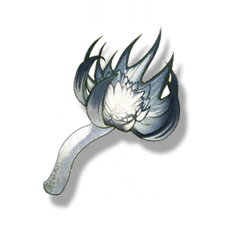

Terraspawn Fungus
Resources

Material for cooking.
A fungus that grows in black soil. When the fungus matures and blackens, it begins to self-dissolve, and the ground that has been stained with the black fungus juice will continuously produce more fungus. This fungus, which looks like a black lotus, is therefore called Terraspawn Fungus.